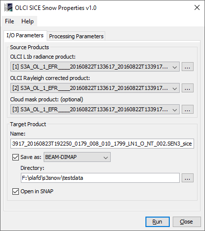
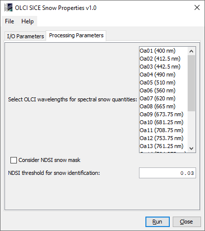
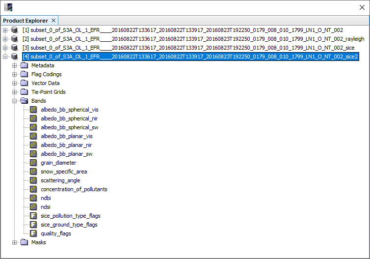
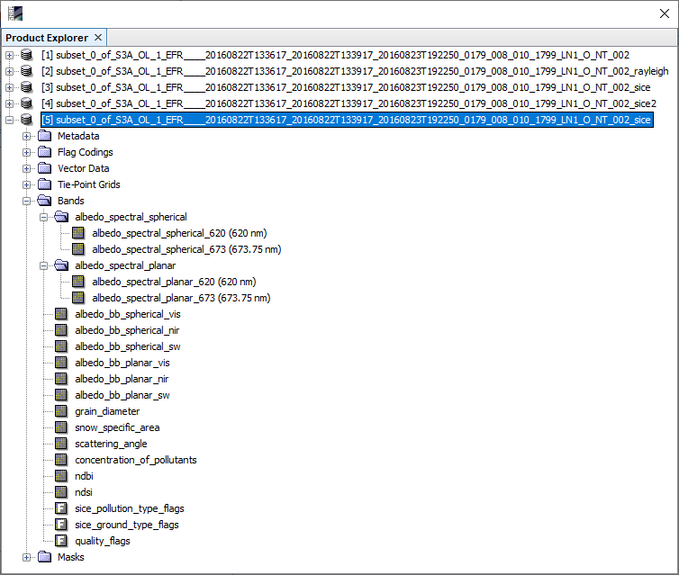

| SNAP Data Processors - OLCI SICE Snow Properties Processor Description |
|

OLCI L1b radiance product: Used to select the OLCI L1b source product.
OLCI L1b or Rayleigh corrected product: Used to select the corresponding OLCI Rayleigh correction source product. This product is the result from a Rayleigh correction of the L1b radiance product in a preprocessing step using the SNAP Rayleigh Correction processor. This Rayleigh correction product is also a mandatory input for the OLCI SICE snow properties retrieval. It MUST contain Rayleigh corrected reflectances for spectral bands 1, 6, 10, 11, 17 and 21 (400, 560, 681, 708, 865 and 1020nm), and in addition for all manually selected spectral wavelengths (see processing parameter descriptions below). Providing this Rayleigh corrected product as input will save significant computation time for the snow property retrieval itself.
Cloud mask product (optional): Used to select an optional source product providing a cloud mask. This product must have been generated in a preprocessing step using the IdePix pixel classification tool in the specific version for OLCI provided as separate processor plugin through the SNAP Desktop plugin manager (see corresponding SNAP help documentation for more information). Mandatory conditions for this optional cloud mask product are the presence of the classification flag band named 'pixel_classif_flags', and that the product has been generated on the same raster (i.e. the same OLCI L1b product) which is considered for the snow properties retrieval.
Use the ... button to open a data product currently not opened in the Sentinel Toolbox.
Name: Used to specify the name of the target product.
Save to: Used to specify whether the target product should be saved to the file system. The combo box presents a list of file formats.
Open in SNAP: Used to specify whether the target product should be opened in the Sentinel Toolbox. When the target product is not saved, it is opened in the Sentinel Toolbox automatically.

Select OLCI wavelengths for spectral snow quantities:
The OLCI wavelengths considered for the retrieval of spectral snow quantities. For the selected wavelengths,
the computed spectral snow quantities (i.e. spectral snow albedo, see description of processor output below)
will be written as corresponding band into the target product. If no band is selected, only broadband snow
quantities and other selected wavelength-independent quantities are written to the target product.
Consider NDSI snow mask:
If selected, an NDSI value will be computed from Rayleigh reflectances at wavelengths 865 and 1020nm:
NDSI = (brr865 - brr1020) / (brr865 + brr1020)
The considered pixel will be interpreted as snow pixel if
The default is 'false'.
NDSI threshold for snow identification:
If an NDSI snow mask is considered (previous parameter), the considered pixel will be interpreted as snow pixel if
the NDSI exceeds the threshold specified here, and if the Rayleigh reflectance at OLCI band 1 (400nm) is greater
than 0.5. The default number is 0.03.
The processor provides a variable number of output bands, depending on the settings of the processing parameters.

albedo_bb_spherical_vis:
Spherical albedo in broadband visible range.
albedo_bb_spherical_nir:
Spherical albedo in broadband near infrared range.
albedo_bb_spherical_sw:
Spherical albedo in broadband shortwave range.
albedo_bb_planar_vis:
Planar albedo in broadband visible range.
albedo_bb_planar_nir:
Planar albedo in broadband near infrared range.
albedo_bb_planar_sw:
Planar albedo in broadband shortwave range.
grain diameter:
Diameter of snow grains in millimeters.
snow_specific_area:
The 'snow specific area' in square metres. See the ATBD [3] for more details.
scattering_angle:
The scattering angle. See the ATBD [3] for more details.
concentration_of_pollutants:
The concentration of pollutants. See the ATBD [3] for more details.
ndbi:
The NDBI ratio. See the ATBD [3] for more details.
ndsi:
The NDSI ratio. See the ATBD [3] for more details.
sice_pollution_type_flags:
The SICE pollution type flags. Snow can be either clean or polluted by soot, dust, algae, or uncertain matter.
ice_ground_type_flags:
The SICE ground type flags. Ground type can be uncertaiin, snow, or bare ice which in return can be clean or polluted.
quality_flags:
The quality flags band from the OLCI L1b product.
The following case shows the processor output bands if 2 OLCI spectral wavelengths (bands 7 and 9, 620 and 673.75nm) were selected.

albedo_spectral_spherical_nnnn:
The spectral spherical albedo for the selected OLCI wavelengths nnnn.
albedo_spectral_planar_nnnn:
The spectral planar albedo for the selected OLCI wavelengths nnnn.
albedo_bb_spherical_vis:
Spherical albedo in broadband visible range.
albedo_bb_spherical_nir:
Spherical albedo in broadband near infrared range.
albedo_bb_spherical_sw:
Spherical albedo in broadband shortwave range.
albedo_bb_planar_vis:
Planar albedo in broadband visible range.
albedo_bb_planar_nir:
Planar albedo in broadband near infrared range.
albedo_bb_planar_sw:
Planar albedo in broadband shortwave range.
grain diameter:
Diameter of snow grains in millimeters.
snow_specific_area:
The 'snow specific area' in square metres. See the ATBD [3] for more details.
scattering_angle:
The scattering angle. See the ATBD [3] for more details.
concentration_of_pollutants:
The concentration of pollutants. See the ATBD [3] for more details.
ndbi:
The NDBI ratio. See the ATBD [3] for more details.
ndsi:
The NDSI ratio. See the ATBD [3] for more details.
sice_pollution_type_flags:
The SICE pollution type flags. Snow can be either clean or polluted by soot, dust, algae, or uncertain matter.
ice_ground_type_flags:
The SICE ground type flags. Ground type can be uncertaiin, snow, or bare ice which in return can be clean or polluted.
quality_flags:
The quality flags band from the OLCI L1b product.
[1]
SEOM S3 for Snow project page
[2]
Pre-operational Sentinel-3 snow and ice products (SICE)
[3]
Kokhanovsky, A., Box, J.E., Lamare, M., Dumont, M., Picard, G., Danne, O., and C. Brockmann:
Algorithm Theoretical Basis Document: Snow Properties Retrieval from Sentinel-3. Version 2.4, 11 January 2019.
[4]
Sentinel-3A Product Notice: OLCI Level-2 Ocean Colour
[5]
Kokhanovsky, A., Lamare, M., Di Mauro, B., Picard, G., Arnaud, L., Dumont, M., Tuzet, F., Brockmann, C., and J.E. Box:
On the reflectance spectroscopy of snow. The Cryosphere, 12, 2371-2382, 20 July 2018.